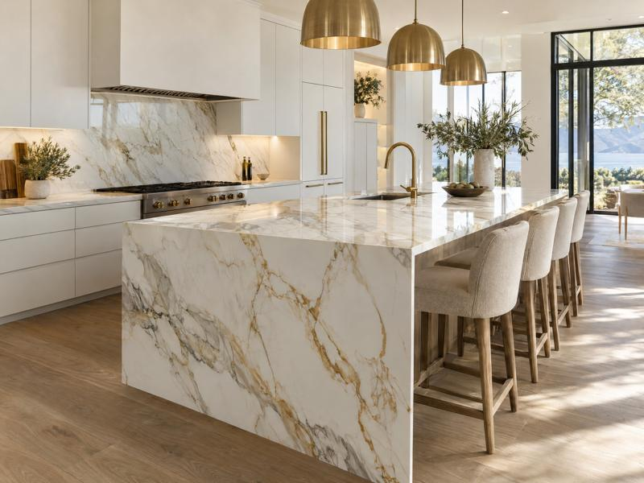

Bancadas de porcelanato · São Paulo e região
Bancadas de porcelanato sob medida em São Paulo e Alphaville
Medimos no local, cortamos em CNC e instalamos com equipe própria. Acabamento reto, veios alinhados e prazo cumprido, do lavabo à ilha de cozinha.

- Medição e projeto gratuitosVisita técnica e projeto 3D sem custo.
- Porcelanato de marcas premiumPlacas de grande formato, com nota fiscal.
- Instalação por equipe própriaSem terceirizar a etapa mais delicada.
- Garantia de 5 anosSobre fabricação e instalação.
Por que porcelanato
Porcelanato, granito ou quartzo: o que muda na sua bancada
O porcelanato reúne o visual do mármore com uma superfície praticamente impermeável. Veja como ele se compara às opções mais usadas em mármore e granito em São Paulo.
| Critério | Porcelanato | Granito | Quartzo |
|---|---|---|---|
| Resistência a manchas | Muito alta. Absorção abaixo de 0,5%. | Média. Vinho e óleo podem marcar. | Alta. |
| Higiene | Superfície não porosa, sem acúmulo de bactérias. | Porosa, depende de impermeabilização. | Não porosa. |
| Manutenção | Praticamente zero. Pano úmido e detergente neutro. | Impermeabilização periódica. | Baixa. Evitar panela quente direto. |
| Acabamentos | Calacatta, Statuario, Nero Marquina, ônix, concreto e mais. | Limitado às pedras naturais. | Médio, cores mais uniformes. |
Comparativo geral. Cada placa tem ficha técnica própria, que entregamos junto com o orçamento.
Acabamentos e ambientes
Bancadas de porcelanato para cozinha, banheiro e área gourmet
Projetos em porcelanato Calacatta, Statuario, Nero Marquina, Verde Alpi, travertino e mais. Toque em uma foto para ampliar e pedir orçamento com a mesma placa.
Viu um acabamento que combina com o seu projeto?
Quero um orçamentoComo trabalhamos
Do primeiro contato à bancada instalada, em 5 etapas
Um responsável acompanha o seu projeto do início ao fim.
Contato e briefing
Você envia fotos, planta ou ideia pelo WhatsApp. Entendemos uso, estilo e orçamento.
Medição no local
Visita técnica gratuita com medição a laser e conferência de prumo e nível.
Projeto 3D e placa
Paginação dos veios no projeto e escolha da placa com você ou o seu arquiteto.
Fabricação em CNC
Corte, recortes e meia-esquadria a 45° com precisão milimétrica.
Instalação e limpeza
Equipe própria instala, veda e entrega o ambiente limpo.
Aplicações
Onde a bancada de porcelanato faz diferença
Cozinha
Ilhas, cascatas e backsplash na mesma placa. Recortes para cooktop e cuba feitos em CNC.
Banheiro
Cuba esculpida, dupla cuba ou cuba de apoio. Superfície que não absorve água nem cosméticos.
Lavabo
Peça de destaque com placas especiais como Verde Alpi e Calacatta Viola.
Área gourmet
Resiste a gordura, calor da churrasqueira e sol. Limpeza com pano úmido.
Home bar
Bancada e parede em book match, com veios contínuos de ponta a ponta.
Mesa de jantar
Tampos de grande formato em uma só peça, sem emenda aparente.
Lavanderia
Bancada sobre lava e seca e tanque, firme e fácil de manter.
Clientes
O que dizem sobre a entrega
“A ilha com cascata ficou com os veios contínuos do tampo até o piso. Mediram duas vezes e instalaram no dia combinado.”
“Especifiquei Nero Marquina para um apartamento e o corte da meia-esquadria ficou perfeito. Equipe limpa e pontual.”
“Trocamos o granito da área gourmet por porcelanato. Gordura da churrasqueira sai com pano úmido.”
Depoimentos ilustrativos, a serem substituídos por avaliações reais de clientes.
Área de atendimento
Bancada de porcelanato em São Paulo, Alphaville e região
A visita técnica e a medição são gratuitas em toda a área abaixo. Para outras cidades, consulte pelo WhatsApp.
Bairros de São Paulo
Cidades vizinhas
Orçamento gratuito
Peça o orçamento da sua bancada
Preencha em menos de 1 minuto. Ao enviar, o WhatsApp abre com tudo preenchido e retornamos para agendar a medição.
- WhatsApp: (11) 95435-3037
- Segunda a sexta, 8h às 18h · Sábado, 8h às 12h
Dúvidas frequentes
Perguntas sobre bancada de porcelanato
Porcelanato é melhor que granito para bancada?
Para a maioria das cozinhas e banheiros, sim. O porcelanato absorve menos de 0,5% de água, não mancha com vinho, café ou azeite e dispensa impermeabilização. O granito é natural e muito resistente, mas é poroso e pede manutenção periódica. O porcelanato também oferece mais acabamentos, como Calacatta, Nero Marquina e ônix.
Quanto custa uma bancada de porcelanato?
O valor depende da metragem, da placa escolhida, do tipo de borda e dos recortes (cooktop, cuba, tomadas). Por isso fazemos a medição no local sem custo e enviamos o orçamento detalhado por escrito. Mande fotos ou o projeto pelo WhatsApp para uma estimativa inicial.
Qual a espessura ideal da bancada de porcelanato?
Usamos placas de 6 mm a 12 mm sobre base estruturada. A frente recebe saia esquadrejada a 45 graus, que dá o visual de pedra maciça com 4 a 6 cm de espessura. Em ilhas com cascata, a mesma placa segue até o piso com os veios contínuos.
Dá para fazer cooktop e cuba embutidos na bancada?
Sim. Os recortes de cooktop, cuba de embutir, cuba de sobrepor e cooktop por indução são feitos em máquina CNC, com cantos reforçados. Também fazemos cuba esculpida na própria placa e calha úmida.
Qual o prazo de entrega e instalação?
Em média de 10 a 15 dias úteis após a aprovação do projeto e da placa. A instalação costuma levar 1 dia por ambiente e termina com limpeza completa.
Vocês atendem minha cidade?
Atendemos toda a cidade de São Paulo e Alphaville, Tamboré, Barueri, Santana de Parnaíba, Granja Viana, Cotia, Jundiaí, Valinhos e Campinas. A visita técnica é gratuita em toda a região.